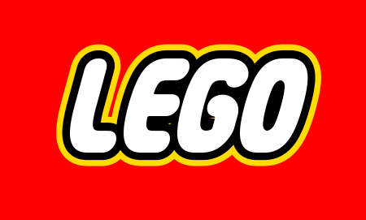

|  |
LEGO GroupÈ un’azienda privata a conduzione familiare con sede a Billund, in Danimarca, e uffici a Enfield, negli USA, a Londra, nel Regno Unito, a Shanghai, in Cina, e a Singapore.Fondata nel 1932 da Ole Kirk Kristiansen, l’azienda è uno dei maggiori produttori al mondo di giochi basati sul famoso mattoncino LEGO®. All’insegna del motto „Only the best is good enough", la società è fortemente impegnata nello sviluppo della creatività dei bambini e ha l’obiettivo di ispirare e sviluppare i costruttori del domani tramite il gioco e l’apprendimento. |
 |
Giorgio ArmaniHa fondato la sua azienda a Milano nel 1975. Da allora, è diventato un leader mondiale nella creazione di collezioni d’abbigliamento e accessori con i marchi Emporio Armani e Armani Jeans. Il suo stile è lussuoso, moderno, sofisticato e contemporaneo e tutte queste caratteristiche si ritrovano anche nella collezioni di interior design e complementi d’arredo per la casa firmate Armani Home. |
TronyÈ una catena italiana di negozi specializzati nella vendita di elettrodomestici, prodotti di elettronica di consumo, di informatica e telefonia. Trony è un gruppo formato da 18 soci, distribuiti su tutto il territorio nazionale, che comprende complessivamente 215 punti vendita. I collaboratori ammontano a circa 2500 unità. |